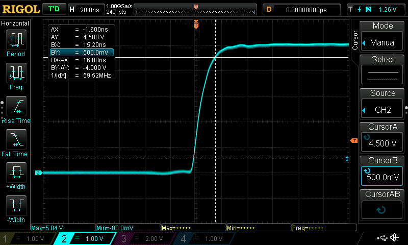
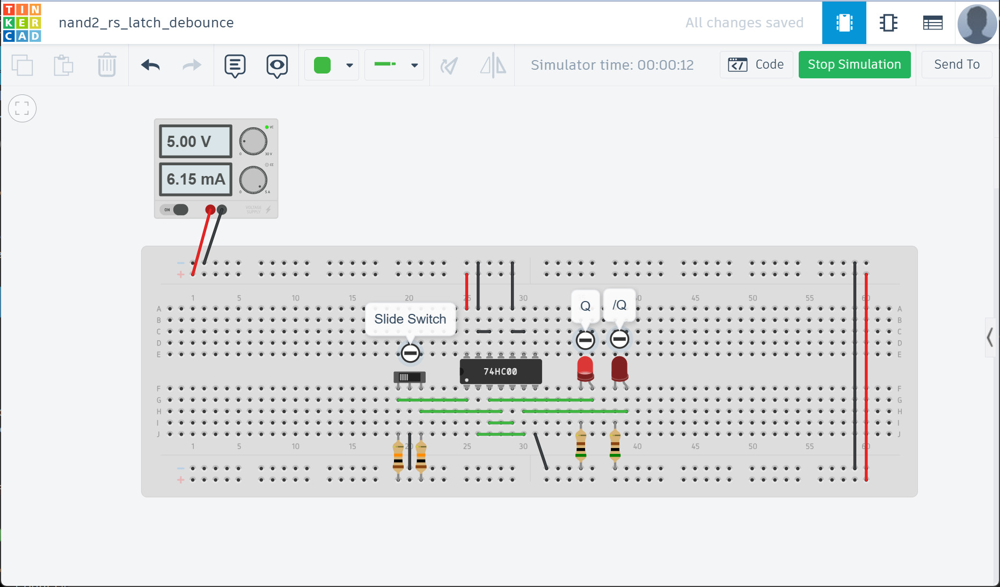
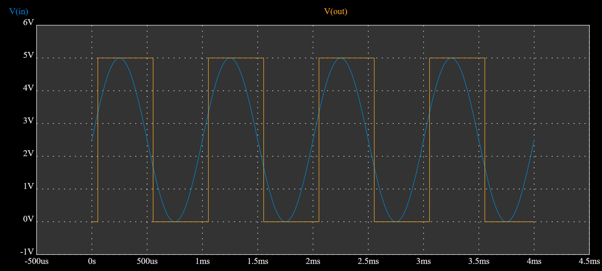

Lab Sheet 1#
This lab sheet contains the following lab activities:
- Lab 1: Measuring Electrical & Timing Parameters of Discrete Logic Gates
- Lab 2: Creating a 2-to-1 MUX Using NAND Logic Gates
- Lab 3: Creating an RS Latch Using NAND Logic Gates
- Lab 4: Building an Edge Detector with Pulse Generator using NAND Gates or 555 Timer IC
- Lab 5: Schmitt-Trigger Input
Lab 1: Measuring Electrical & Timing Parameters of Discrete Logic Gates#
Components Required#
- Logic gate IC: 74HC00 (Quad 2-input NAND gate)
- Resistors (1kΩ and 200Ω)
- Capacitors (10nF and 100nF)
- Breadboard, jumper wires
- DC power supply
- Digital multimeter (DMM)
- Digital oscilloscope
- Function generator
- USB flash drive (for saving waveform data)
Lab Procedure#
-
Hardware Implementation: Implement a NOT gate using a 74HCT00N IC on a breadboard.
- Connect all unused input pins (if any) to GND (do not leave them floating).
-
Power Connection: Connect +5Vdc and GND from the power supply to the VCC and GND pins of the 74HC00N IC, respectively.
-
Test Signal Generation: Use a function generator to generate rectangular wave (i.e. a digital pulse signal) with the following settings as the input signal of the NOT gate:
- Peak-to-Peak Voltage (Vpp): 5V
- DC Offset (Voffset): 2.5V
- Frequency: 10kHz or 100kHz
- Note: Ensure that Vmin (LOW) = 0V and Vmax (HIGH) = 5V
-
Signal Measurement: Use a digital oscilloscope to measure, analyze, and capture the input waveform to verify correct settings before applying the signal to the input pin.
- Use two probes of a digital oscilloscope on CH1 and CH2 to measure the input and output signals of the NOT gate, respectively.
-
Waveform Analysis & Parameter Measurement: Use the digital oscilloscope to measure the following parameters:
- Rise time and fall time of the output signal:
- Rising from 10% to 90% of VCC: tr or tTLH
- Falling from 90% to 10% of VCC: tf or tTHL
- Propagation delays:
- tPHL (HIGH-to-LOW delay)
- tPLH (LOW-to-HIGH delay)
- Average propagation delay: tpd = (tPHL + tPLH) / 2
- Voltage level of HIGH logic output
- Voltage level of LOW logic output
- Note:
- Adjust the time/div setting of the oscilloscope to achieve appropriate time resolution for accurate measurement.
- Capture the waveforms and save them as .PNG files on a USB flash drive, for inclusion in the lab report.
- Rise time and fall time of the output signal:
-
Floating Input: Leave the input of the NOT gate unconnected (floating). Measure the signal at the output pin.
- Do not connect a probe to the input pin of the NOT gate.
- Observe and capture the output waveform using the oscilloscope.
-
Input Voltage Test: Change the parameters of the input signal:
- (Vmin,Vmax): (0V,5V) → (0.5V,4.5V) and (1.0V,4.0V), respectively.
- Observe and capture the output waveform on the oscilloscope for each case.
-
Capacitive Load Test: Add a capacitive load (CL) to the output pin of the NOT gate:
- Use the input signal as defined in Step 3.
- Use different values for CL, such as 10nF and 100nF.
- Observe and capture the output waveform on the oscilloscope for each case.
-
Resistive Load Test: Add a resistive load (RL) to the output pin of the NOT gate.
- Use the input signal as defined in Step 3.
- Use different values for RL, such as 1kΩ and 200Ω.
- Observe and capture the output waveform on the oscilloscope for each case.
-
Output Indication: Modify the circuit on the breadboard by adding two LEDs (each with a 1kΩ current-limiting resistor) such that the LEDs blink alternately in response to a pulse signal (Frequency = 10Hz) applied to the NOT gate.
- Take a photo of your breadboard circuit for inclusion in the lab report.
Figure: Test setup for measuring timing parameters using a 74HC00 logic gate. In this case, all NAND2 gates are configured as inverters. One inverter drives three additional inverters to demonstrate a fan-out greater than 1.

Figure: 74HC/HCT00 Pinout, PDIP-14 IC Package

Figure: 74HC/HCT00 Timing Parameters - Propagation Delays, Transition Times, Rise and Fall Times (Source: Nexperia)
Figure: Sample Waveform (CH1: Input Signal, CH2: Output Signal)

Figure: Rise & Fall Time Measurement (using the cursor function of the digital oscilloscope)
74HC/HCT00N Datasheets (from different manufacturers)#
- TI: SN74HC00, SN74HCT00
- Nexperia/Wingtech:: 74HC/HCT00
- Diodes: 74HC00, 74HCT00
Post-Lab Questions for Lab 1#
-
What are the measured values for the following parameters? Compare each measured value with the corresponding value specified in the datasheet.
- Transition time (tt): tpd = (tPLH + tPHL) / 2
- Propagation delay (td): tt = (tTLH + tTHL) / 2
-
According to the manufacturer's datasheet for 74HCT00N, what are the typical values of the following parameters at room temperature (25°C):
- VIL (Input Low Voltage)
- VIH (Input High Voltage)
- VOL (Output Low Voltage)
- VOH (Output High Voltage)
-
What would happen if the input voltage is VCC/2 = 2.5V? Why must this condition be avoided?
-
How does the capacitive load (CL) affect the rise time, fall time, and propagation delay? Explain why these effects occur.
-
When reducing the input voltage swing (e.g., from 0V–5V to 1V–4V), how does the output waveform behavior change?
-
What are the potential effects of leaving unused inputs floating on a CMOS logic IC like the 74HC/HCT00? Why is it important to tie unused inputs to a defined logic level?
-
As the resistive load decreases (i.e., causing more current to flow), how does the output waveform behavior change? Explain why this happens in terms of the drive capability of the gate.
-
Does decreasing the load resistor cause an increase in source current? Explain why.
-
What are the key differences between the 74HCTxx and 74HC00xx logic families?
-
Can both the 74HCxx and 74HCTxx operate correctly with VCC = +3.3V?
Lab 2: Creating a 2-to-1 MUX Using NAND Gates#
Components Required#
- Logic gate IC: 74HC00 (Quad 2-input NAND gate)
- Slide switch (SPDT)
- Capacitor (10nF)
- Breadboard, jumper wires
- DC power supply
- Digital multimeter (DMM)
- Digital oscilloscope
- Function generator
Lab Procedure#
-
Pre-Lab Simulation: Model a 2-to-1 multiplexer (MUX) using a 74HC/HCT00 IC (quad two-input NAND gates). Create and simulate a virtual circuit prototype on a breadboard.
- Select input:
S - Data inputs:
AandB - Data output:
O = A · /S + B · S(where/Sis the logical NOT ofS) - Note: This task must be completed before the lab session.
- Select input:
-
Hardware Implementation: Implement the 2-to-1 MUX circuit using the 74HCT00N IC on a physical breadboard.
- Use a slide switch (SPDT - Single Pole Double Throw)
to select either VCC or GND as the select input (
S) of the MUX. - Connect the input
Ato GND. - Apply a pulse signal from a function generator to the input
Bof the MUX.- Peak-to-Peak Voltage (Vpp): 3V
- DC Offset (Voffset): 1.5V (Vmin = 0V and Vmax = 3V)
- Frequency: 10kHz or 100kHz
- Add a capacitor (e.g. 10nF) between the input
Sand GND.
- Use a slide switch (SPDT - Single Pole Double Throw)
to select either VCC or GND as the select input (
-
Power Connection: Connect +5V DC and GND from the power supply to the VCC and GND pins of the 74HCT00N IC, respectively.
-
Circuit Testing and Verification: Test the function of the MUX circuit by changing the position of the slide switch.
- Use a 4-channel digital oscilloscope to measure the inputs
BandSand the outputO, using channelsCH1,CH2andCH3, respectively. - Capture the waveform to detect the transition
0 -> 1and then1 -> 0on theSsignal. - Verify the input/output logic levels against the truth table of a 2-to-1 MUX.
- Use a 4-channel digital oscilloscope to measure the inputs
Figure: Schematic of a NAND2-based 2-to-1 MUX circuit (drawn with EasyEDA)
Figure: Measurement of MUX's signals (CH1 = B, CH2 = O and CH3= S)
Post-Lab Questions for Lab 2#
-
Explain how the Boolean expression
O = (A · /S) + (B · S)is implemented using only 2-input NAND gates. Detail the logic for each stage of your NAND gate implementation. -
Based on the captured waveforms for the transitions on
S, describe how the output waveform changed relative to the input waveforms (AandB). -
If the input
Aof the 2-to-1 MUX is connected to GND, what is the equivalent Boolean expression for the output of the MUX? How can this function be reimplemented using only 2-input NAND gates? Draw the schematic of your circuit.
Lab 3: Creating an RS Latch Using NAND Gates#
Components Required#
- Logic gate IC: 74HC00 (Quad 2-input NAND gate)
- Push buttons
- Slide switch
- LEDs + current-limiting resistors
- Breadboard, jumper wires
- DC power supply
- Digital multimeter (DMM)
- Digital oscilloscope
Lab Procedure#
-
Pre-Lab Simulation: Model an RS latch using a 74HC/HCT00 IC. Create and simulate a virtual circuit prototype on a breadboard.
- Inputs:
/S(active-low set) and/R(active-low reset) - Data outputs:
Q(non-inverting output) and/Q(inverting output) - Hint: Use two 2-input NAND gates connected in a cross-coupled configuration to implement the RS latch..
- Note: This task must be completed before the lab session.
- Inputs:
-
Hardware Implementation (RS Latch): Implement the RS latch using the 74HCT00N IC on a breadboard.
- Use two active-low push-button switches (referred to as
SW1andSW2) with pull-up resistors (e.g., 10kΩ) for the/Sand/Rinputs of the RS latch.
- Use two active-low push-button switches (referred to as
-
Output Indication: Connect two LEDs, each with a current-limiting resistor, to the output pins of the RS latch.
- The LED will illuminate (ON) when the corresponding output logic level is HIGH.
-
Power Connection: Connect +5V DC and GND from the power supply to the VCC and GND pins of the 74HC00N IC, respectively.
-
Circuit Testing and Verification (RS Latch): Test the RS latch with all possible input combinations to verify functional correctness.
- Press the push buttons to test the circuit.
Use the test cases for the inputs
/Sand/Ras specified by the table below. - Use a digital multimeter (DMM) to measure the voltages of the inputs and outputs.
- Turn the power supply off and on again, and observe the initial states of both LEDs.
- Take a photo of your breadboard circuit for inclusion in the lab report.
- Press the push buttons to test the circuit.
Use the test cases for the inputs
-
RS Latch for Slide-Switch Debouncing: Modify the RS latch circuit as follows.
- Remove the switches
SW1andSW2. - Use a slide switch with:
- Center pin connected to GND
- Outer pins connected to VCC through pull-up resistors
- Connect one outer pin of the slide switch to
/Sand the other outer pin to/R. - Rapidly change the slide-switch position and use an oscilloscope to monitor inputs
/S,/Rand the outputQof the RS latch. - Observe and capture the waveforms of
/S,/RandQusing the oscilloscope.
- Remove the switches
-
Hardware Implementation (Gated RS Latch): Modify the RS latch to implement a gated RS latch:
- The gated RS latch has the following I/Os:
- Inputs:
S(active-high set),R(active-high reset) andEN(enable or clock input) - Outputs:
Q(non-inverting output) and/Q(inverting output)
- Inputs:
- The push-button switches
SW1andSW2should be active-high (with pull-down resistors). - Use a slide switch to provide the logic HIGH or LOW for the input
EN.
- The gated RS latch has the following I/Os:
-
Circuit Testing and Verification (Gated RS Latch):
- Take a photo of your breadboard circuit for inclusion in the lab report.
Table: The truth table for an RS latch with active-low inputs
| /R (Reset) | /S (Set) | Q | /Q | Description |
|---|---|---|---|---|
| HIGH | HIGH | Q | /Q | Hold (no change) |
| LOW | HIGH | 0 | 1 | Reset state |
| HIGH | LOW | 1 | 0 | Set state |
| LOW | LOW | X | X | Invalid state |
Simulation Demo#
Figure: Schematic of a NAND2-based RS latch circuit (drawn with EasyEDA in Simulation mode)
Figure: Schematic of a NAND2-based RS latch circuit for slide-switch debouncing (drawn with EasyEDA in Simulation mode)
Figure: Schematic of a gated NAND2-based RS latch circuit (drawn with EasyEDA in Simulation mode)
Figure: Virtual circuit simulation of a RS Latch (with AUTODESK Tinkercad)

Figure: Virtual circuit simulation of a RS Latch for Slide Switch Debouncing
Post-Lab Questions for Lab 3#
-
Explain the "forbidden state" for an RS latch built with NAND gates. What happens to the outputs when both
/Sand/Rare simultaneously asserted (LOW) or when both push-buttons are held pressed? -
What happened to the output
Qand/Qwhen theENinput of the gated RS latch is LOW (de-asserted), regardless of changes in any input? -
What are the initial states of
Q,/Q, and both LEDs after a power reset? -
Explain how an RS latch can be used to de-bounce a slide switch.
-
Based on the observed waveforms, is it possible for both
/Sand/Rof the RS latch to beLOWat the same time when using slide switches as input controls? -
Explain how to implement a D latch based on a RS latch. Draw a schematic diagram of the D latch implementation using 2-input NAND gates only.
Lab 4: Building an Edge Detector with Pulse Generator using NAND Gates or 555 Timer IC#
Components Required#
- Logic gate IC: 74HC00 (Quad 2-input NAND gate)
- 555 Timer IC
- Resistors and capacitors
- Push button
- Potentiometer
- Breadboard, jumper wires
- DC power supply
- Digital oscilloscope
- Function generator
Lab Procedure#
-
Pre-Lab Simulation: Model a digital circuit using a 74HC/HCT00 IC to detect a rising edge on a pulse signal. Create and simulate a virtual circuit prototype on a breadboard.
- Key Idea: A short pulse is generated when:
O = D AND (NOT D_delayed), whereDis the input,D_delayedis its time-delayed (RC-delayed) version ofDandOis the output. - Expected Result:
- When the input goes from LOW → HIGH, the output
Ogenerates a short HIGH pulse. - The HIGH pulse width must be between 0.1 msec and 1 msec.
- When the input goes from LOW → HIGH, the output
- Note: This task must be completed before the lab session.
- Key Idea: A short pulse is generated when:
-
Hardware Implementation (NAND-based edge detector): Implement the circuit using the 74HCT00N IC on a breadboard.
- Use a push button with a pull-up resistor (e.g., 10kΩ) to connect the input
Dof the circuit. - Use VCC = 5V as the supply voltage.
- Use a push button with a pull-up resistor (e.g., 10kΩ) to connect the input
-
Circuit Testing and Verification (NAND-based edge detector): Test the circuit.
- Try pressing and quickly releasing the push button to generate a very short active-low pulse.
- Use a digital oscilloscope to monitor both input and output signals.
-
Using a 555 Timer IC in Monostable Mode: Build a circuit on the breadboard to generate a single short pulse when a push button is clicked and then released. The HIGH pulse width of the output should be between 5 msec to 50 msec.
- Draw the schematic of the circuit.
- Take a photo of the implemented circuit that works correctly as expected.
-
Circuit Testing and Verification (555 Timer-Based Edge Detector): Test the circuit.
- Use a digital oscilloscope to analyze the input and output waveforms.
- Try pressing and quickly releasing the push button to generate a very short active-low pulse.
- Compare the results with those of the NAND2-based circuit.
- Discuss the differences in how each circuit detects or responds to trigger conditions.
- Use a function generator to produce a PWM (Pulse Width Modulation) signal to test the circuit, ensuring that the output is also a periodic signal. Select the frequency and pulse width of the input signal appropriately. Capture both the input and output waveforms.
Datasheet for 555 Timer ICs#
Simulation Demo#

Figure: Schematic of a pulse detector using NAND2 gates with a RC delay circuit
Figure: Virtual circuit simulation using a function generator to produce a periodic pulse signal and an oscilloscope to measure the output signal.
Figure: Virtual circuit simulation of a 555 timer-based circuit that detects a falling edge transition triggered by a push button press and generates a pulse as output.
Signal Measurement Demo#

Figure: Sample waveforms from a 555 Timer IC circuit, measured using an oscilloscope (CH1 = Input or Trigger signal, CH2 = Output pulse signal).
Post-Lab Questions for Lab 4#
- How does the value of the RC time constant affect the pulse width of the output?
- Compare the simulation result with the actual oscilloscope waveform. Are they consistent? If not, why?
- How would you modify the circuit to detect a falling edge instead of a rising edge?
- In a 555 Timer monostable circuit, what condition on the input signal initiates pulse generation?
- How can the pulse width of the output signal of a 555 Timer circuit be made adjustable using a potentiometer? Draw the modified 555 Timer based circuit.
- What is the 74HC/HCT132? Can it be used in place of the 74HCT00N? Are there any advantages?
Lab 5: Schmitt-Trigger Input#
Components Required#
- Logic gate IC: 74HCT14N (Hex Schmitt-Trigger Inverters)
- Breadboard, jumper wires
- DC power supply
- Digital oscilloscope
- Function generator
Lab Procedure#
- Hardware Implementation:
- Select one NOT gate inside the 74HCT14N as DUT (Device Under Test).
- Use +5Vdc as the supply voltage for the IC.
- Circuit Testing and Verification: Use a triangular input signal.
- Voffset: 2.5V
- Peak-to-Peak Voltage (Vpp): starting from 2.5V, up to 4.0V
- Frequency: 10kHz
- Signal Measurement: Use a digital oscilloscope to measure signals.
- Probe Channels: CH1 = Input signal, CH2 = Output signal
- Volt/Div Setting Use 1V/div and also ground reference level for both channels. Adjust the vertical alignment of both waveforms properly.
- Use cursor function to measure the following parameters:
- The largest voltage level of the input signal that causes the
HIGH→LOWtransition on the output. - The smallest voltage level of the input signal that causes the
LOW→HIGHtransition on the output.
- The largest voltage level of the input signal that causes the
Datasheet for 74HC/HCT14 ICs#
- TI: SN74HCT14
- Nexperia: 74HC/HCT14
- Diodes:: 74HCT14
Simulation Demo#
Figure: Simulation of a non-inverting Schmitt-trigger buffer with 74HC14N (hex Schmitt-trigger inverters) using AUTODESK Tinkercad

Figure: Simulation waveforms of input and output signals
Figure: Simulation of two cascaded inverting Schmitt-trigger buffer using EasyEDA
Post-Lab Questions for Lab 5#
-
According to the experiment, what happens when increasing the Vpp of the triangular test signal? What type of waveform is the output?
-
Explain the definition of VT+ (Positive-going threshold), VT– (Negative-going threshold), and the hysteresis of a Schmitt-Trigger input.
-
What are typical values for VT+ and VT– given in the datasheet?
-
How to use a digital function generator to generate the following test signal?

Figure: Test signal generated using a digital function generator
This work is licensed under a Creative Commons Attribution-ShareAlike 4.0 International License.
Created: 2025-05-22 | Last Updated: 2025-06-15